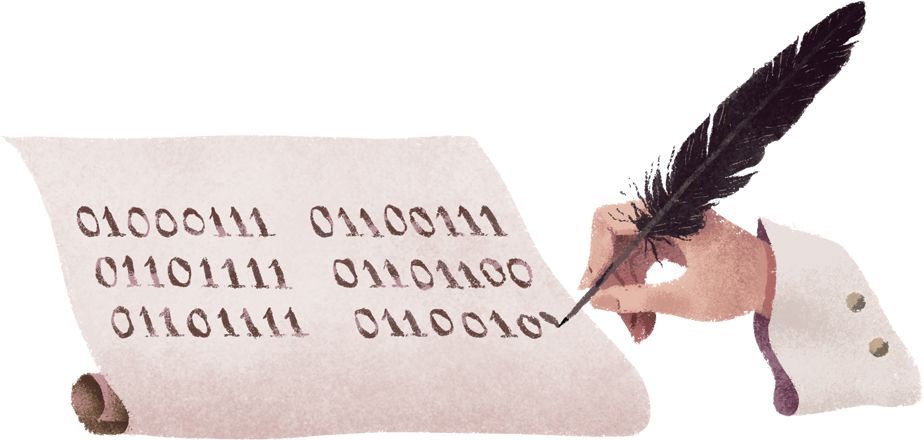
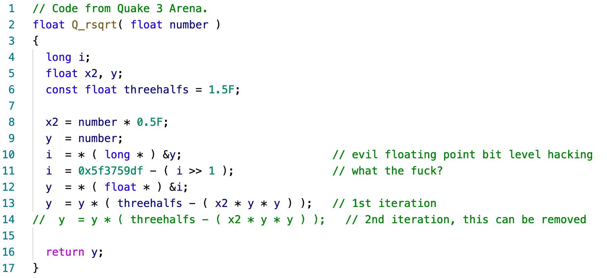
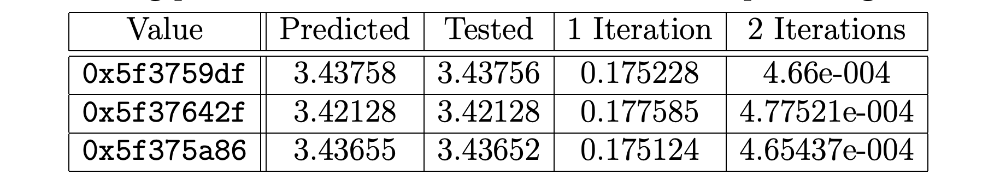

Hacker’s Delight——高效算法的奥秘
1. 二进制：Google的浪漫

先从一张图片开始。如上图 1 是 Google 在 2018 年 7 月 1 日的首页涂鸦，当天是戈特弗里德·威廉·莱布尼茨诞辰 372 周年。如果用户点击图片，就会跳转跳转到莱布尼茨的维基百科页面。Google 用这种浪漫的方式，纪念了莱布尼茨在二进制方面的贡献。
这张图片二进制编码，从第一个开始，01000111 所对应的 ASCII 码即为英文字母 G，01101111 对应着小写英文字母 o。以此类推，自上而下，从左到右，这 6 个二进制串编码的信息即为 Google。
提到莱布尼茨，大部分的第一印象肯定是他与牛顿谁先发明微积分这一数学界著名公案，这一公案直接导致莱布尼茨悲催的晚年。
莱布尼茨的得意旗手约翰·伯努利在最速降线问题上被牛顿这头狮子的利爪划伤之后，从此退居二线，始终不愿正面与牛顿对抗。在胡克去世后，牛顿成为英国皇家学会会长，他迅速将皇家学会变成了自己的私属领地，依靠在科学方面的成就，受封爵位。此时，达到了一生影响力的巅峰的牛顿，亲自出手料理莱布尼茨，坐实莱布尼茨剽窃其学术成果。牛顿统治着整个皇家学会，而莱布尼茨却只是汉诺威选帝侯乔治治下的小小宫廷官员，两人在话语权上完全就不是一个段位的人。莱布尼茨去世之时仅有一位医生与秘书送行，甚至没有牧师为他祈祷。这位大师的葬礼，潦草得像是埋葬一个强盗。
回到 Google 首页的涂鸦上，现代二进制计数系统由莱布尼茨于 1679 年设计，之后，通过布尔、香农等人的推动发展，现代意义的电子计算机开始出现，世界开始了翻天翻天覆地的变化。
每一次微积分概念的应用，微积分符号的每一次书写，在电子设备上的每一次点击，都是莱布尼茨大师精神永存的体现。
2. 雷神之锤：神一般存在的sqrt函数
我本科也是计算机专业，所以对计算机编程算是略知一二。在我看来，计算机中最神秘、最迷人的算法之一，就是位运算算法。举一个最简单的例子，如果我们想判断一个数 $x$ 是不是偶数，根据偶数的定义，$x%2==0$，则 $x$ 为偶数。但是更为优雅的方式是：$x&1==0$，则 $x$ 为偶数。这两种方式通过编译优化后，性能差距或许不明显，但是它们的思想是完全不同的。
再来看另一个问题，编程计算 $\sqrt{n}$，即计算平方根（Square Root）。看到这里，你可以稍稍停一下，如果换做是你进行编程，你会使用什么方式实现？
(i) 定义法：使用二分法计算 $\sqrt{n}$（注：暂不考虑溢出问题）：
① 初始化：$l=0, r = 0$
② 计算 $l$ 和 $r$ 的中值：$mid=(l +r)/2$
③ 比较 $mid^2$和 $n$ 的大小，如果 $mid^2 < n$，则 $l = mid$；否则 $r = mid$
④ 重复②，直到满足精度要求.
**(ii) 使用牛顿-拉弗森迭代法：**我们想要求解 $x = \sqrt{n}$，我们令 $f(x) = x^2-n$。让目标满足 $f(x) = 0$，开方问题变成了求方程的根的问题。这里我直接给出迭代式：
$$x_{n+1} = x_n - \frac{f(x_n)}{f’(xn)}$$
代入 $f(x)$ 得：$x_{n+1} = \frac{x_n + n}{2x_n}$
// 牛顿迭代法 Xn+1 = (Xn + X / Xn) / 2
const double ESP = 10e-5;
double sqrt(double n)
{
double r = n;
while (fabs((r * r) - n) > ESP)
{
r = (r + n / r) / 2;
}
return r;
}
一般来说，如果在算法面试时，能一气呵成编程实现牛顿迭代法，已经可以说是对这道题有一定的理解了。但是接下来介绍的一个算法，绝对能让人打开眼界，瞠目结舌。
(iii)雷神之锤 3（Quake III Arena）- Fast Inverse Square Root
这个算法计算的是 $1/\sqrt{n}$，也就是平方根的倒数。同样，如果是你来实现这个算法，你会怎么做呢？得益于下面的代码实现，这个问题才能广为流传，成为技术人员茶余饭后的美谈。我第一次看到这个代码时，内心久久不能平复，或许那天是个阳光正好的上午，但我的心情肯定不是很好，至少几声发自心底的卧槽是少不了的。

图 2 神一般存在的 sqrt 函数 [2]
或许这个项目的其他研发人员在 Code review 时，和我的心情是一样的，否则不会有第 11 行的 “what the fuck?” 这么具有个人感情倾向的注释。
值得补充的一点是，QUAKE 的开发商 ID SOFTWARE 遵守 GPL 协议，开源了 QUAKE-III，我们才能有幸目睹这个传奇的 3D 引擎的原代码。这个项目的核心研发人员是可以追溯到的，而且肯定是他们其中的一个写的，但是作者就是死不承认。这段代码的作者至今仍然是一个谜，就和区块链的真正创始人一样，人们只能依靠自己的想象和在一次次的感叹中表达自己的崇拜。
在一次采访中，曾经的项目主管在回忆此事时说出了如下这段话：
Which actually is doing a floating point computation in integer - it took a long time to figure out how and why this works, and I can’t remember the details anymore.
如果他没有骗人的话，我们可以推测，这个神秘的数字就是先猜出来的，然后经过测试和优化，最终确定了一个最好的数字。因此在后来的代码 Review 时，研发人员只能抓狂的写下 “what the fuck？” 这样的代码注释。当然，也可能是先算出来的，这群天才就是太谦虚，不想忍受凡人的膜拜而已。
如果是要我选出一个迄今为止对自己影响最大的算法，Quake 3 Arena 中的 Q_rsqrt() 能毫无疑问的当选。这个程序启发了我对计算机科学更加深入的思考，一个伟大的程序，是一位计算机科学家（11行）和一位数学家（13行）智慧的结晶。
0x5f3759df，这一串神秘的 16 进制在计算机中表示一个32位的数字。关于它在程序中的作用，网络上已经有大篇文章研究得非常透彻，这里我只做一些简单的解释，更多的细节感兴趣可以在网络上搜索。
非理工科专业的同学只需要知道，通过使用 0x5f3759df 这个神秘数字，能够得到一个非常接近 $1/\sqrt{n}$ 的值。之后在此基础上只需要再使用一次牛顿迭代法，就可以求解出一个非常精确的值。普渡大学的数学家 Chris Lomont 看了这个神秘数字后之后，很感兴趣，他在精心研究之后从理论上严格推导出了一个最佳值[3]：0x5f37642f。Lomont 对于他计算出来的结果非常满意，于是拿自己计算出的数字（0x5f37642f）和神秘数字（0x5f3759df）做比赛，看看谁的数字能够更快更精确的求得平方根。结果他输了～。可能他非常生气，然后使用暴力的方式得出另外的数字 0x5f375a86，但是结果也只比神秘数字好那么一丢丢，赢得很不开心。

图3 计算平方根倒数的神秘数字**[3]**
关于这段神秘的代码，就暂时先告一段落。
或许高级语言的编译器已经在我们看不见的地方帮我们做好了所有的工作，即使丑陋的代码运行起来表现得也不会太差。但是，不能因为这样，就不再去追求那些简洁、快速且优雅的实现。这个世界的普通人太多了，如果我们不是天才，那就要努力吸收天才的思想，有些事情明明可以做到最好，就不要对自己的要求太低。就像写代码，代码编译通过、运行正常绝不是我们追求的目标，这只是最最基础的东西而已。
3. 0x5f3759df: 高效算法的奥秘
这是我最近一段时间阅读的书，书名叫做《Hacker’s Delight》，中文译本为《算法心得：高效算法的奥秘》。正是由于这本书，才有了这一篇读书报告。
这本书是算法领域最有影响力的著作之一（我最近才知道），与大师高纳德（Donald Knuth）所著的《计算机程序设计艺术》共同被誉为所有程序员都应该阅读的计算机著作。本书基本上涉及了目前计算机编程中的所有能用二进制加减乘除和位运算解决的问题。
写代码时常常苦于乘法操作频繁溢出、开方算法过于复杂，有些小段代码，仅两三行即能解决平常数十行代码方能实现的功能、只用 0x24924925 这般神奇的数字，就能成倍的提升运算速度。从这本书中，我找到了答案。
4. 总结
这份读书报告，我本来的是想写一写二进制，然后过渡到计算机编程中的位操作算法的，但是写着写着有点偏了。关于《算法心得：高效算法的奥秘》这本书，我感觉内容不太适合写在读书报告里，这本书的读书笔记我打算发布在我的个人网站上（https://landodo.github.io/）。
参考文献
[1] Google. Gottfried Wilhelm Leibniz’s 372nd Birthday[EB/OL]. 2018.
https://www.google.com/doodles/gottfried-wilhelm-leibnizs-372nd-birthday.
[2] Software, R.f., Origin of Quake3’s Fast InvSqrt()[EB/OL]. 2006.
https://www.beyond3d.com/content/articles/8/
[3] Lomont C. Fast inverse square root[J]. Tech-315 nical Report, 2003, 32.
[4] 算法心得：高效算法的奥秘[M]. 北京：机械工业出版社，2014